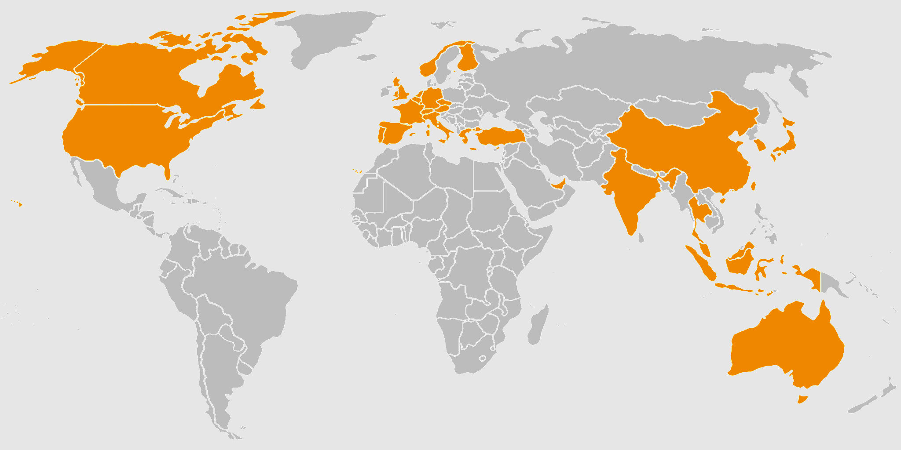
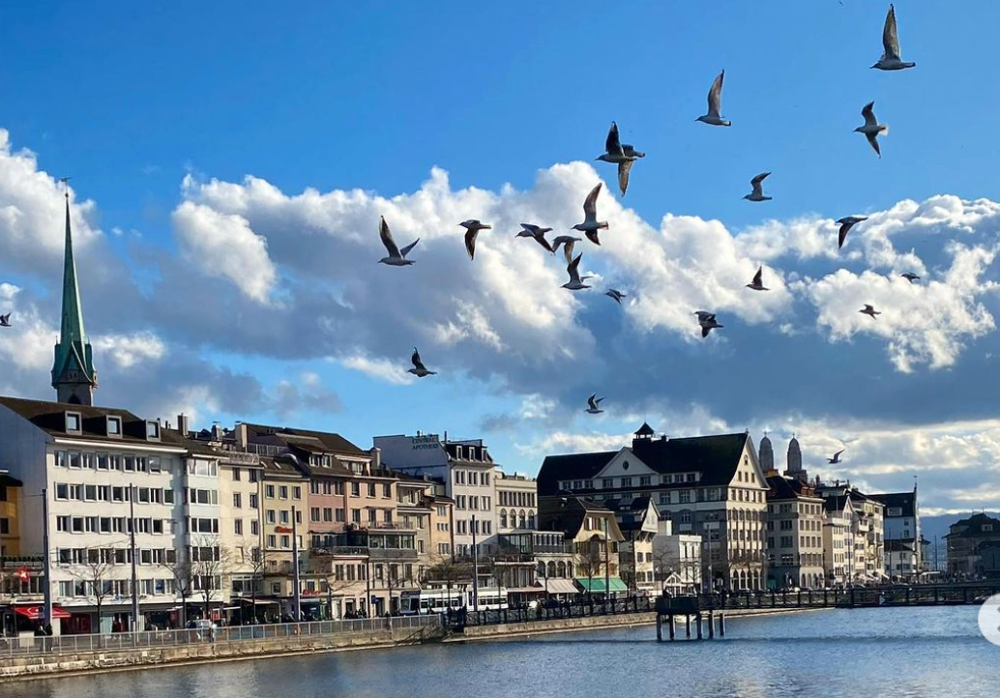
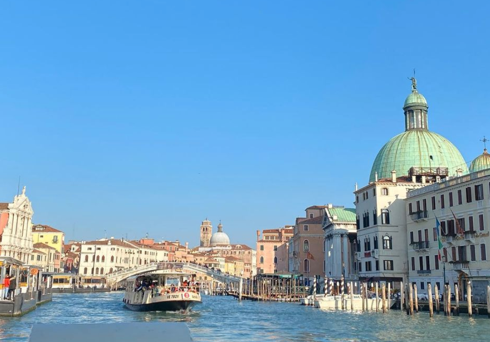
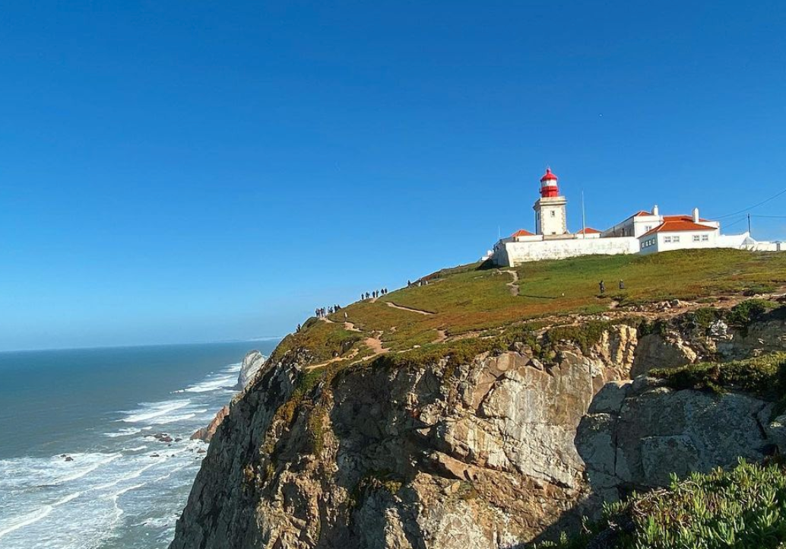

Welcome to my travel index
I've visited 12% of all countries in the world.
I am an enthusiastic traveler all over the world. Travel every weekend with a quest for beautiful cities and beautiful scenery. What drives my heart? It is curiosity and rich sensitivity. No time like the present.
My profileHello, I'm Mayu 💌 from Tokyo


Graduate Student
I am in Master of Science at emlyon business school in France
2019-2020 in the U.K.
Based in London to study english and media communication at UAL. Traveling Europe 31%
【Weekends】 11/15-17 ✈️Lisbon🇵🇹Portugal 11/29-12/1 🚂Antwerp⇢Bruxelles Belgium🇧🇪 Bruxelles⇢Luxemburg🇱🇺❄️
【Holidays】 12/14-✈️Madrid,Barcerona🇪🇸Spain 🚂Amsterdam🇳🇱Netherlands 12/26- Italy 🇮🇹 Milano,Florence,Pisa,Venice,Como Lake
【New Year's celebration🎉】 1/3-5 Bruges,Ghent🇧🇪 1/11-12 Paris🇫🇷 1/17-21 Zürich🇨🇭Switzerland 🚂🏔 Jungfraujoch 1/25-26 wiz Jess Oslo, Norway🇳🇴 3/4-5 Northern Lights in Tromsø🌌 3/7 Stonehenge 3/8-3/9 🚂 Liverpool 🏴 ⇢ Caernarfon 🏴 ⇢ Crewe 🇬🇧
【VISIT Scotland🏴】 3/12 Glasgow to Glenfinnan🚂 3/15 Liverpool🏴 3/19 London to Tokyo🇯🇵
2020-2021 in Paris
Posted in Stories and Reels on instagram. Next travel✈ Jerusalem🇮🇱 Sweden🇸🇪 Galway in Dublin🇮🇪 Malta🇲🇹 Lake District 🇬🇧🐇
Never stop exproling Beautiful destination…
SWISS
Zürich is the largest city in Switzerland. Fountains, rivers and the lake – water is everywhere and the beautiful architecture is iconic symbol for Zürich.
ITALY
Venice, well known also as the “City of Canals,” “The Floating City,” and “Serenissima,” is arguably one of Italy's most picturesque cities.
PORTUGAL
Cape Roca is a cape which forms the westernmost point of mainland Portugal, of continental Europe, and of the Eurasian land mass.